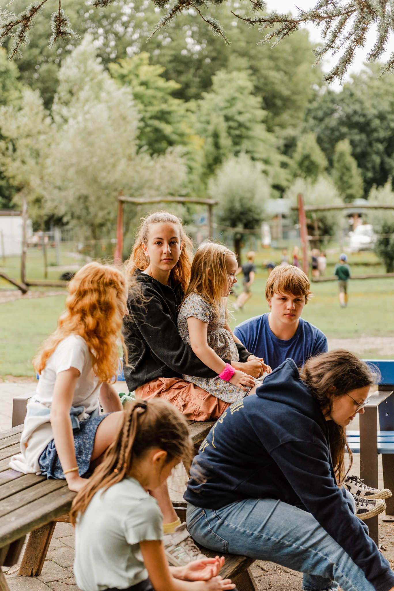
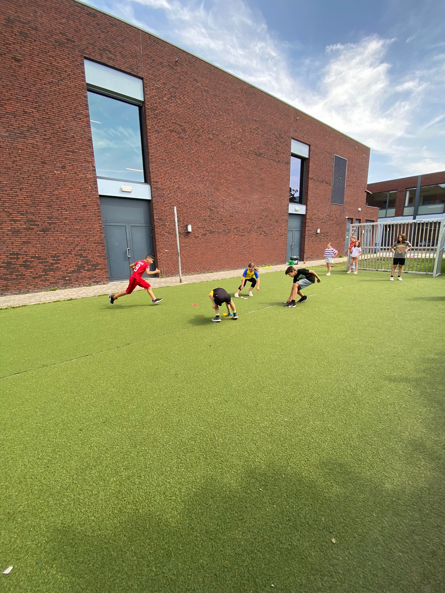

Algemeen
Iedere zomer kunnen jonge Lokeraars terecht bij Speloke, de
speelpleinwerking van Lokeren.
Elk jaar gaat een team van vrijwillige animatoren en beroepskrachten
van de stedelijke dienst Sport en Jeugd op verschillende locaties in
Lokeren aan de slag om kinderen een onvergetelijke zomer te geven.
Voor wie
Alle kinderen van het geboortejaar 2019 tot en met geboortejaar 2011
zijn welkom. Zindelijkheid is vereist.
Op het speelplein worden de kinderen ingedeeld in 2
leeftijdscategorieën: kleuters (geboortejaar 2019 tot en met 2017)
en lagereschoolkinderen (geboortejaar 2016 tot en met 2011).
Periode
De volledige grote vakantie
precieze datum's volgen nog
Thema's
Er is één algemeen thema door de hele zomer heen.
De animatoren spelen dan per week op dit thema in. Om zo voor elke
week een ander thema te hebben
zodat de kinderen altijd vol kunnen genieten van de zomer.
Prijzen
| Halve dagwerking | Volle dagwerking |
|---|---|
| €2,5 per dag | €45 per week |
| Factuur achteraf | Op voorhand betalen |
Deze prijs omvat:
✓ De verzekering
✓ Tal van activiteiten, begeleid door de opgeleide animatoren
Vooropvang
Heeft je kind nood aan vooropvang?
Op beide speelpleinlocaties biedt Buitenschoolse kinderopvang
'Kinderclub Patjoepelke' van 7 tot 8.45 uur vooropvang.
Ouders die gebruik willen maken van de vooropvang moeten:
Dit
vooraf melden aan bko.patjoepelke@lokeren.be
Alle voorwaarden
(hier te vinden)
in orde brengen
Let op: Er is GEEN opvang op maandag 10 juli,
dinsdag 11 juli en van maandag 31 juli tot en met dinsdag 15
augustus.
Voor- en naopvang is niet inbegrepen in de deelnameprijs.
Volgende tarieven worden gehanteerd.
Het speelplein is gesloten op 21 juli en 15 augustus.

Pleinen
We hebben twee speelplein locaties
Eén hiervan ligt in Spoele en de andere ligt in Eksaarde
Beide pleinen zijn in dezelfde periode's open en ook voor hetzelfde
publiek toegankelijk
De doelgroepen zijn voor kinderen met geboortejaar 2019 tot en met 2011
De periode is van ...juli tot ...augustus
Spoele
De locatie van speelplein Spoele is op de stedelijke basisschool Spoele. Met als ingang de ingang van de school.
⚲ Jozef De Veusterstraat , 9160 Lokeren
Eksaarde
De locatie van speelplein Eksaarde is op de stedelijke basisschool Eksaarde. Met als ingang de parking van de sporthal.
